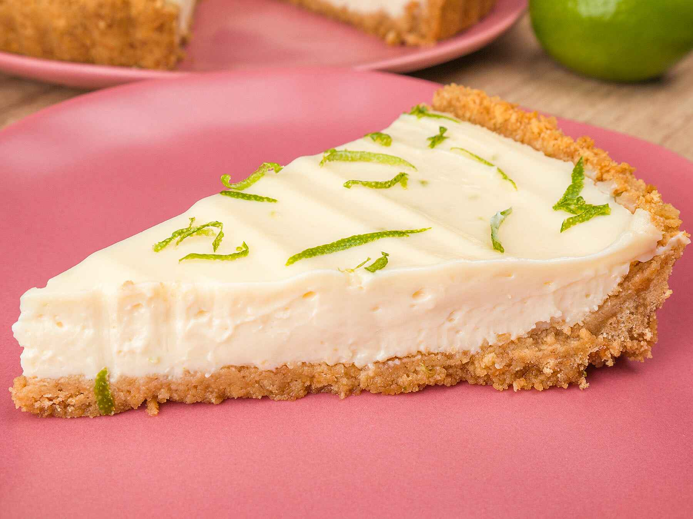

Lemon Pie

Description
Simple and delicious lemon pie.
Ingredients
Crust
- 200g Biscuit
- 2 tablespoons Butter
Filling
- 400g Condensed milk
- 200g Whipped cream
- 1 Lemon
Steps
- Preheat oven to 180 degrees C.
- Mix the biscuit with the butter. Press over the bottom and up the sides of a deep-dish pie plate to form a crust.
- Bake in the preheated oven until crust is firm, about 7 minutes. Let cool completely.
- Beat the condensed milk, the whipped cream and the lemon; beat until thoroughly blended. Pour filling into the cooled crust.
- Refrigerate until filling is set, about 4 hours.